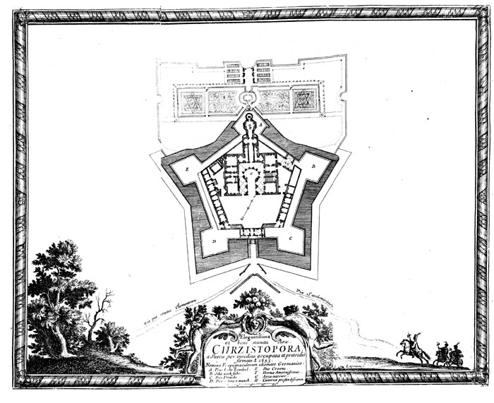

Krzemionki
Ruiny powstałej w latach 1627–1644 rezydencji pałacowej otoczonej fortyfikacjami bastionowymi położonej w miejscowości Ujazd w województwie świętokrzyskim. Była to największa budowla pałacowa w Europie przed powstaniem Wersalu. Od 2018 ma status pomnika historii.